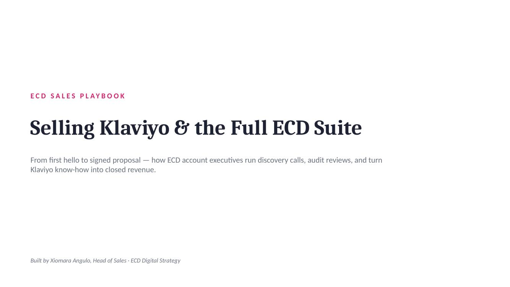

Ten scenarios pulled from real ECD discovery calls, audits, and internal Klaviyo-partner touch-bases. Enter your name so your results can be tracked as part of onboarding.
Ten scenarios, pulled from real ECD discovery calls, audit reviews, and internal Klaviyo-partner touch-bases. At each decision point, choose what you'd actually say — then see how it plays out against ECD's proven playbook answer. Some options are designed to sound reasonable and still be wrong — read carefully.
Homework for Module 1 — how deals start, the Klaviyo rep relationship, and running a discovery call. Take the quiz first, then work through these four scenarios.
20 tough multiple-choice questions on deal origination, rep relationships, and discovery calls. One attempt shown at a time — your score is revealed at the end.
Homework for Module 2 — product knowledge, pricing, discounting rules, and the audit process. Take the quiz first, then work through these five scenarios.
26 tough multiple-choice questions on Klaviyo suite pricing, commission rules, service fit (including the flow retainers), and the Retention-led audit process. One attempt shown at a time — your score is revealed at the end.
Homework for Module 3 — real objections, when to walk away, the follow-up cadence that closes, and the full pipeline from proposal to handoff. Take the quiz first, then work through these five scenarios.
25 tough multiple-choice questions on objection handling, when to decline a deal, follow-up cadence, and the proposal-to-handoff pipeline. One attempt shown at a time — your score is revealed at the end.
The complete 63-slide deck, live right here — click through slide by slide, or jump straight to one from the strip below.

Here's how your choices played out.
Here's how you did.
This view is restricted. Enter the admin passcode to see team results.